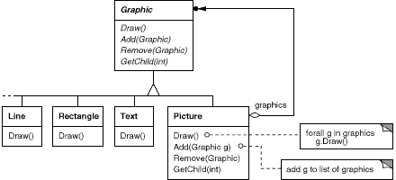
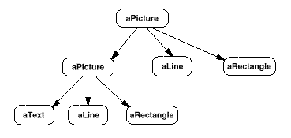
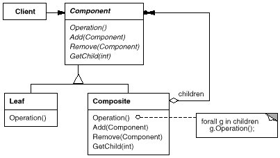
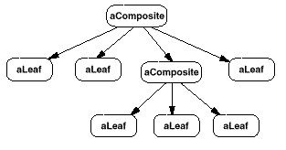

class Composite;
class Component {
public:
//...
virtual Composite* GetComposite() { return 0; }
};
class Composite : public Component {
public:
void Add(Component*);
// ...
virtual Composite* GetComposite() { return this; }
};
class Leaf : public Component {
// ...
};
Composite* aComposite = new Composite;
Leaf* aLeaf = new Leaf;
Component* aComponent;
Composite* test;
aComponent = aComposite;
if (test = aComponent->GetComposite()) {
test->Add(new Leaf);
}
aComponent = aLeaf;
if (test = aComponent->GetComposite()) {
test->Add(new Leaf); // will not add leaf
}

class Equipment {
public:
virtual ~Equipment();
const char* Name() { return _name; }
virtual Watt Power();
virtual Currency NetPrice();
virtual Currency DiscountPrice();
virtual void Add(Equipment*);
virtual void Remove(Equipment*);
virtual Iterator* CreateIterator();
protected:
Equipment(const char*);
private:
const char* _name;
};
class FloppyDisk : public Equipment {
public:
FloppyDisk(const char*);
virtual ~FloppyDisk();
virtual Watt Power();
virtual Currency NetPrice();
virtual Currency DiscountPrice();
};
class CompositeEquipment : public Equipment {
public:
virtual ~CompositeEquipment();
virtual Watt Power();
virtual Currency NetPrice();
virtual Currency DiscountPrice();
virtual void Add(Equipment*);
virtual void Remove(Equipment*);
virtual Iterator* CreateIterator();
protected:
CompositeEquipment(const char*);
private:
List _equipment;
};
Currency CompositeEquipment::NetPrice () {
Iterator* i = CreateIterator();
Currency total = 0;
for (i->First(); !i->IsDone(); i->Next()) {
total += i->CurrentItem()->NetPrice();
}
delete i;
return total;
}
class Chassis : public CompositeEquipment {
public:
Chassis(const char*);
virtual ~Chassis();
virtual Watt Power();
virtual Currency NetPrice();
virtual Currency DiscountPrice();
};
Cabinet* cabinet = new Cabinet("PC Cabinet");
Chassis* chassis = new Chassis("PC Chassis");
cabinet->Add(chassis);
Bus* bus = new Bus("MCA Bus");
bus->Add(new Card("16Mbs Token Ring"));
chassis->Add(bus);
chassis->Add(new FloppyDisk("3.5in Floppy"));
cout << "The net price is " << chassis->NetPrice() << endl;